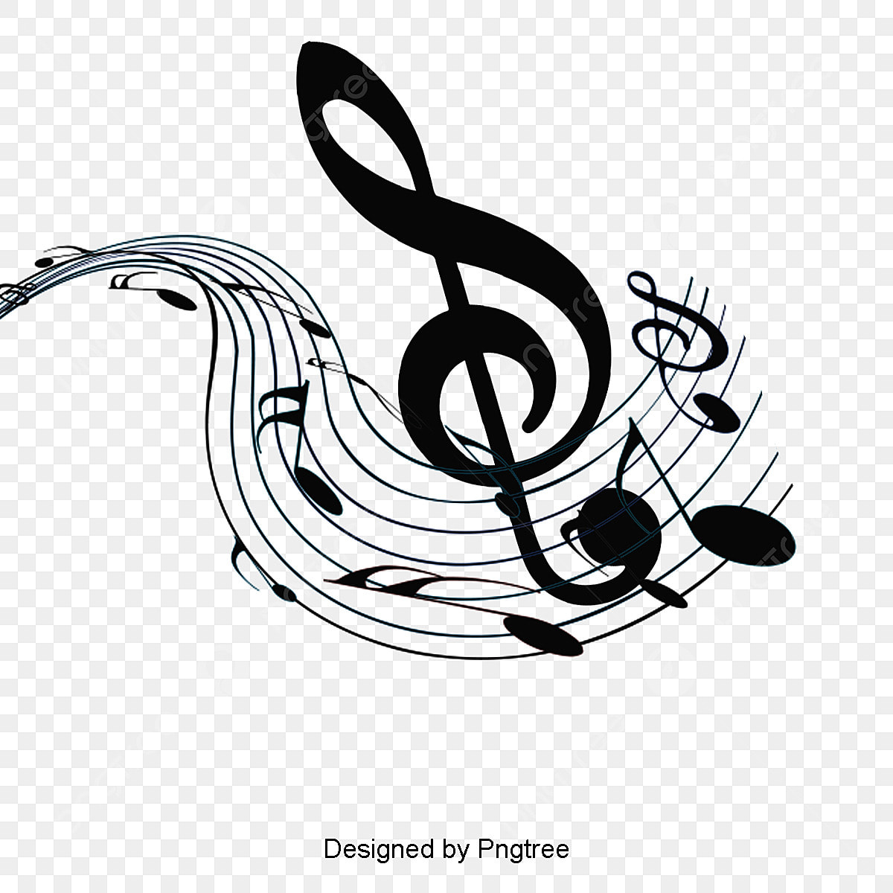
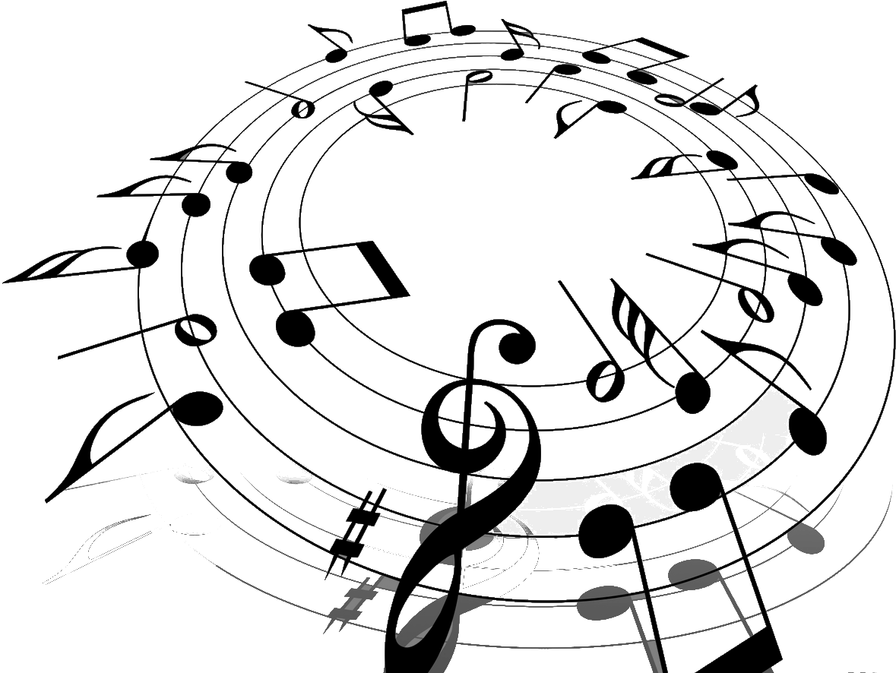

La música es una forma de expresión artística que consiste en la combinación de sonidos vocales o instrumentales, conforme a estándares culturales de ritmo y melodía. La música es una de las más antiguas formas de arte y ha estado presente, de diferentes maneras, en prácticamente todas las culturas humanas. Se puede crear con fines estéticos, recreativos, ceremoniales, terapéuticos o de comunicación. Existen muy diversas maneras de producir música. Se pueden emplear métodos tradicionales con instrumentos y voces, improvisar con objetos de uso cotidiano o utilizar programas informáticos de creación musical, llamados DAW (estación de audio digital, por sus siglas en inglés). Sea cual sea el método, el principio es el mismo. Las piezas musicales responden a contextos históricos, culturales y estéticos específicos y su valoración depende de lo que una sociedad o grupo considere como arte. La música se asocia con ciertos aspectos de la mente y se considera un estímulo importante para el pensamiento lógico y matemático, la adquisición del lenguaje, el desarrollo psicomotriz, la creatividad y muchas otras habilidades humanas.

La palabra «música» proviene del griego antiguo mousiké, que quiere decir «relativo a las musas». Las musas eran, según la mitología griega, nueve diosas, hijas de Zeus (rey de los dioses) y Mnemosine (la diosa de la memoria). Cada una de las musas tenía un don. Clío: la historia y la poesía épica, Euterpe: la música instrumental, Talía: la comedia y la poesía del campo, Melpómene: la tragedia, Terpsícore: la danza y el canto coral, Erató: la poesía amorosa, Polimnia: la poesía sagrada y los himnos, Urania: la astronomía, las ciencias y la poesía didáctica y Calíope: la poesía épica y la elocuencia. Inicialmente la música era para los griegos solo el canto y la poesía. Más tarde fueron las artes vinculadas a la palabra y, finalmente, todas las disciplinas que se transmitían de forma verbal (filosofía, historia, ciencia, astronomía y otros saberes).
Este sentido de la palabra “música” es un arcaísmo (es decir, un significado antiguo, que ya no se usa), pero permite comprender el lugar que ha tenido esta forma de expresión en las tradiciones, la cosmovisión y la cultura a lo largo de la historia. Esta interpretación corresponde a la cultura occidental, en la que la palabra “música” se entiende como un término extenso, que abarca toda la variedad de estilos, tradiciones y géneros basados en la experiencia estética, la creación humana y la organización de sonidos. Sin embargo, la noción de música y la forma en que se aprecia o comprende en el mundo occidental moderno es muy diferente en otras culturas.
Organizar el sonido. La música se caracteriza por organizar los sonidos para producir secuencias estéticamente apreciables y significativas. Si bien todos los sonidos podrían ser “musicales”, en cada cultura hay un rango específico de sonidos que son considerados estrictamente música. Propagarse a través de ondas. El componente fundamental de la música es el sonido y se transmite a través del aire, el agua y otros medios capaces de transportar ondas. Estos medios pueden ser sólidos, líquidos o gaseosos. Requerir de un ejecutor y un compositor. Necesita de un intérprete o ejecutor, que emplea un instrumento musical o su propia voz para producir los sonidos. Suele requerir también de un compositor, que es quien concibe la pieza musical que será interpretada. Ambos pueden ser la misma persona. Cuatro parámetros fundamentales. Se basa en cuatro parámetros del sonido, que son altura (frecuencia, grave o agudo), duración (tiempo que suena), intensidad (volumen, medida en decibelios) y timbre (cualidad que diferencia los sonidos).

Hay cuatro parámetros que son esenciales del sonido para que la música se produzca, que son: Altura. Es la frecuencia de vibración del sonido. Dependiendo de cuántas veces por segundo vibre, el sonido será más grave (bajo), o agudo (alto). Duración. Es el tiempo en que permanece audible el sonido. Intensidad. La intensidad es la fuerza con la que se produce un sonido, o la cantidad de energía acústica que contiene. Se mide en dB (decibeles) y tiene relación con el volumen o la presión sonora que perciben nuestros oídos. Timbre. Es la cualidad del sonido determinada por la forma de las ondas que lo componen. Es lo que permite distinguir un sonido de otro, aunque tenga la misma altura, duración e intensidad.